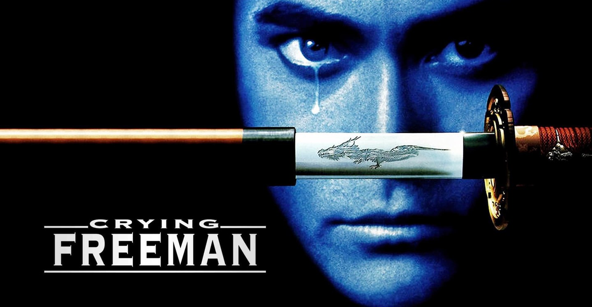
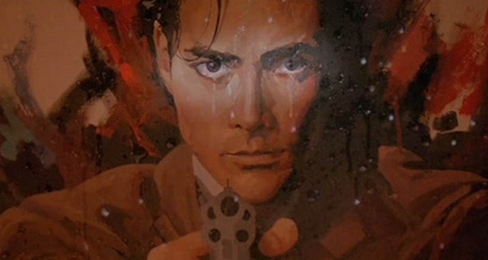
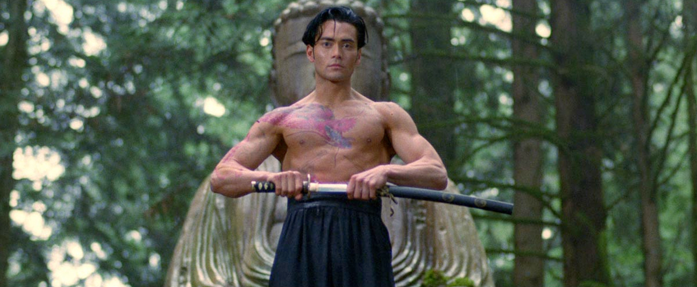

J'avais douze ans. Je pratiquais le karaté.
Et dans mon panthéon personnel, il y avait deux noms au-dessus de tous les autres — Jean-Claude Van Damme et Mark Dacascos.
Pas seulement des acteurs. Des modèles. Des hommes qui montraient ce que les arts martiaux pouvaient être à l'écran — précis, fluides, réels.
J'avais découvert Dacascos un an plus tôt avec Only the Strong sur M6. La capoeira, Miami, un film qui reste encore aujourd'hui l'un de mes films de chevet.
Quand Crying Freeman est sorti, mon grand-père l'a enregistré sur Canal+. Je connaissais déjà l'histoire par la presse spécialisée — le manga de Kazuo Koike, l'assassin qui pleure ses victimes, l'univers sombre et poétique.
Le visage de Dacascos sur l'écran. J'ai su que j'allais aimer ce film avant même qu'il ne commence. Ce n'était plus un hasard. C'était une évidence.
Ce soir, on le remet.

Crying Freeman — Christophe Gans, 1995
Crying Freeman.
1995. Réalisé par Christophe Gans. Avec Mark Dacascos et Julie Condra.
Une co-production franco-canadienne tournée en anglais, distribuée aux États-Unis par Trimark Pictures. Sorti discrètement, sans sortie en salles significative en France, passé directement en vidéo dans la plupart des marchés européens.
Adapté du manga culte de Kazuo Koike et Ryoichi Ikegami — l'histoire de Yo Hinomura, céramiste devenu assassin malgré lui pour le compte d'une organisation criminelle chinoise, condamné à pleurer chaque victime qu'il tue.
La jaquette promettait de l'action, des arts martiaux, une esthétique manga transposée à l'écran.
Ce qu'on trouve à l'intérieur dépasse largement la promesse.
Un film visuellement ambitieux, narrativement fidèle à son source material, porté par un acteur au sommet de sa présence physique.
Christophe Gans avait quelque chose à prouver. Il l'a prouvé.
1995.
Christophe Gans est un cinéphile français obsessionnel — passionné de cinéma de genre asiatique, de manga, de John Woo, de tout ce que le cinéma populaire français ignorait superbement à l'époque. Il a cofondé le magazine Starfix, il connaît ses références sur le bout des doigts. Crying Freeman est son premier long métrage.
Et il met tout dedans.
Le manga de Kazuo Koike était considéré comme inadaptable en occident. Trop stylisé, trop japonais dans son esthétique, trop ambigu moralement pour le marché américain. Gans refuse cette logique. Il adapte fidèlement — la violence, la sensualité, la poésie visuelle de l'œuvre originale — sans chercher à l'édulcorer pour le marché.
Mark Dacascos est le choix évident pour Yo Hinomura. Pas uniquement pour ses capacités martiales — pour quelque chose de plus rare. Une présence à l'écran qui mêle puissance physique et fragilité émotionnelle. Exactement ce que le personnage demande — un tueur qui pleure.
Le film est tourné au Canada avec un budget limité. Gans compense avec une direction artistique irréprochable et une maîtrise de l'image qui annonce déjà Brotherhood of the Wolf, six ans plus tard.
Crying Freeman est un laboratoire. Et ce qui en sort est bien plus que la somme de ses contraintes.

Les larmes du Freeman — Crying Freeman, 1995
Yo Hinomura était céramiste.
Un artiste, pas un guerrier. Jusqu'au jour où il est enlevé par l'organisation criminelle des 108 Dragons et transformé en assassin parfait — conditionné, entraîné, irrésistible.
Avec un détail qui le rend unique parmi tous les tueurs du cinéma d'action : il pleure chaque victime qu'il tue. Pas de remords simulé, pas de crise de conscience dramatique. Des larmes involontaires, physiques, qui coulent sur son visage pendant chaque exécution.
C'est cette contradiction qui fait le personnage — la perfection technique du tueur et l'humanité irréductible de l'homme.
Le film suit sa rencontre avec une femme qui l'a vu tuer et qui aurait dû mourir pour ça. Ce qu'il se passe entre eux — et ce que ça change à tout le reste — c'est le cœur du film.
Crying Freeman n'est pas un film d'action au sens classique. C'est un film de genre au sens noble — avec une vraie vision esthétique, une vraie tension narrative, et un acteur qui comprend exactement ce que son personnage demande.
Ce film aurait pu être un désastre.
Adapter Crying Freeman en occident en 1995 — sans budget hollywoodien, sans star internationale, avec un réalisateur à son premier long métrage — c'était un pari insensé.
Christophe Gans l'a gagné.
Ce qu'il réussit dans ce film tient à une chose fondamentale — il respecte son source material sans le fossiliser. Le manga de Koike est présent dans chaque cadre, dans chaque choix de lumière, dans chaque mouvement de caméra. Mais le film existe aussi pleinement pour lui-même, avec sa propre logique visuelle, sa propre temporalité, sa propre façon de faire coexister la violence et la beauté.
Et Mark Dacascos.
C'est le rôle de sa carrière. Pas seulement parce qu'il est physiquement parfait pour Yo Hinomura — mais parce qu'il comprend la complexité du personnage. Dacascos ne joue pas un tueur qui se trouve avoir des émotions. Il joue un homme entier, avec sa tendresse, sa mélancolie, sa violence — toutes ces choses simultanément.
Les larmes de Crying Freeman ne sont pas un gimmick. Dans les mains de Dacascos, elles deviennent quelque chose de rare au cinéma d'action — une humanité irréductible que rien ne peut effacer.
J'avais douze ans et je pratiquais le karaté.
Je regardais cet homme à l'écran et je comprenais que les arts martiaux pouvaient être autre chose que de la force.
Ils pouvaient être de la grâce.

Mark Dacascos — Crying Freeman, 1995
Crying Freeman n'avait pas les armes pour exister commercialement.
Pas de studio américain derrière lui. Pas de star bankable au sens hollywoodien du terme. Pas de sortie en salles organisée dans les marchés francophones. Une distribution fragmentée, pays par pays, sans cohérence ni ambition marketing.
En France, le film passe directement en vidéo — capté par Canal+ qui le diffuse discrètement, enregistré par quelques passionnés qui avaient suivi l'adaptation du manga dans la presse spécialisée.
Le public général ne l'a jamais vu.
Et les amateurs de manga — ceux qui auraient dû en être le public naturel — ne regardaient pas encore les films d'action occidentaux avec les mêmes yeux qu'ils regardaient les animés. La passerelle entre la culture manga et le cinéma live action n'existait pas encore vraiment en 1995.
Crying Freeman est arrivé trop tôt.
Gans avait compris quelque chose que le marché n'était pas prêt à accepter — que le manga pouvait devenir du grand cinéma d'action occidental sans perdre son âme.
Brotherhood of the Wolf en 2001 lui donnera partiellement raison. Mais Crying Freeman, lui, est resté dans l'ombre.
Parce que Christophe Gans avait raison avant tout le monde.
En 2026, les adaptations de manga en film live action sont partout. Hollywood y investit des centaines de millions. Les studios japonais coproduisent avec les américains. Le marché existe, il est massif, il est respectable.
En 1995, Gans faisait ça avec un budget limité, au Canada, avec un acteur que personne ne connaissait vraiment encore.
Et il le faisait bien.
Crying Freeman mérite d'être vu comme ce qu'il est — un film précurseur, réalisé par quelqu'un qui avait compris avant tout le monde ce que pouvait être une adaptation de manga réussie. Pas une trahison du matériau original, pas une américanisation forcée. Une transposition respectueuse, visuellement ambitieuse, portée par un acteur exceptionnel.
Et Mark Dacascos mérite d'être vu dans ce rôle. C'est son Crow — le film qui montre ce qu'il était capable de faire quand on lui donnait le bon rôle.
J'avais douze ans. Je pratiquais le karaté. Je regardais Dacascos à l'écran et je voulais être aussi précis, aussi fluide, aussi présent que lui.
Trente ans plus tard, ce film me fait encore le même effet.
Crying Freeman n'est pas un film oublié au sens ordinaire du terme.
Il n'a jamais eu la chance d'être vu assez largement pour être oublié.
Il a existé dans les marges — dans les bacs vidéo, dans les enregistrements Canal+, dans les conversations entre passionnés de manga et de cinéma d'action asiatique. Un film de niche qui méritait infiniment mieux que la niche.
Mon grand-père l'avait enregistré sans savoir ce que c'était.
Moi, je savais. Et ce film a confirmé tout ce que je pensais déjà — que Mark Dacascos était une légende, que les arts martiaux pouvaient être de la grâce, et que le cinéma pouvait faire exister un univers manga avec la même force que la page dessinée.
Certains films vous accompagnent toute une vie.
Celui-là en fait partie.
La cassette est dans le lecteur. On rembobine.
Titre original
Crying Freeman
Pays
France · Canada
Genre
Action / Adaptation manga
Durée
102 min
Source
Manga de Kazuo Koike & Ryoichi Ikegami
Distributeur US
Trimark Pictures
Fil conducteur
Dacascos I — Saison 1
Écho
Only the Strong (S2) — Dacascos II
Regarder l'épisode
SOMEDAY — EP. 11